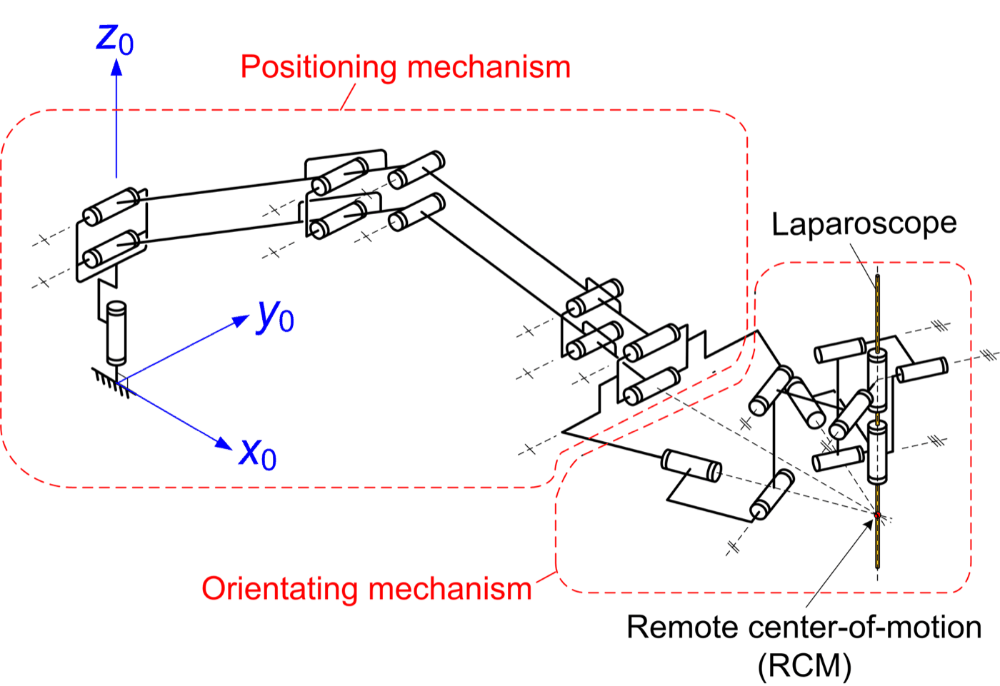
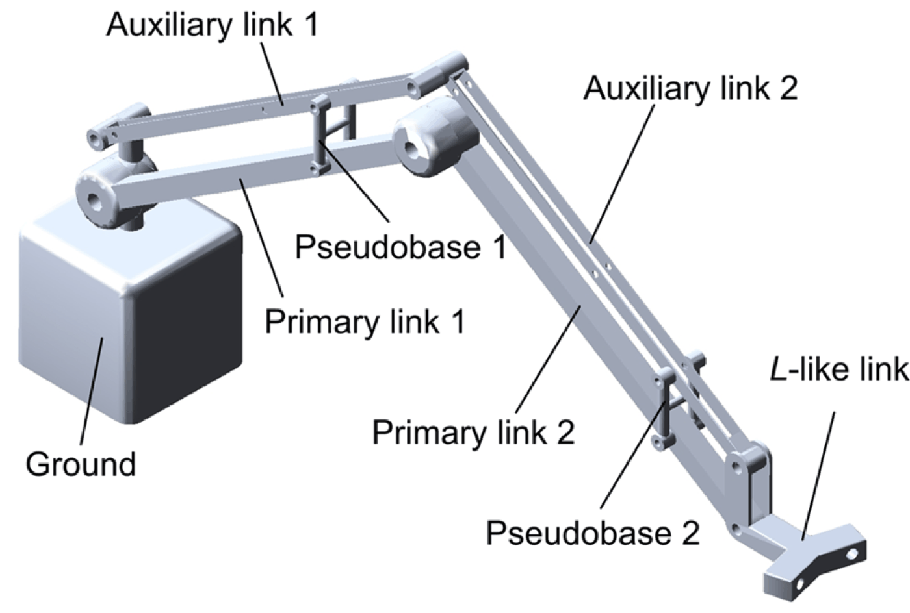
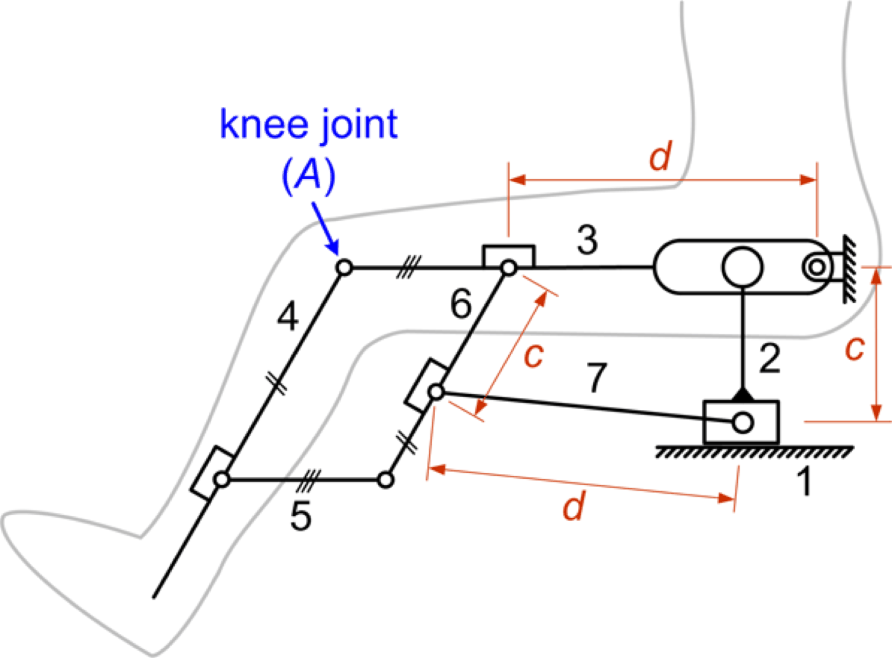
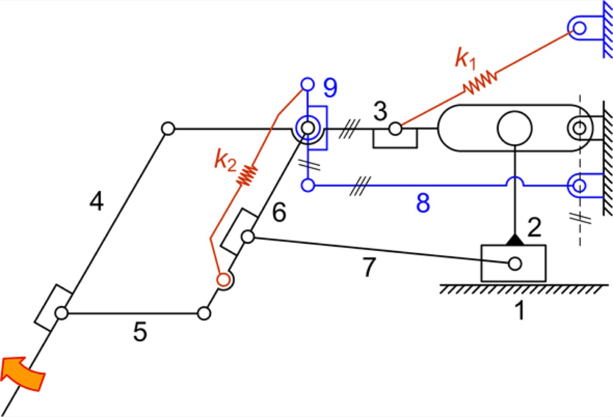
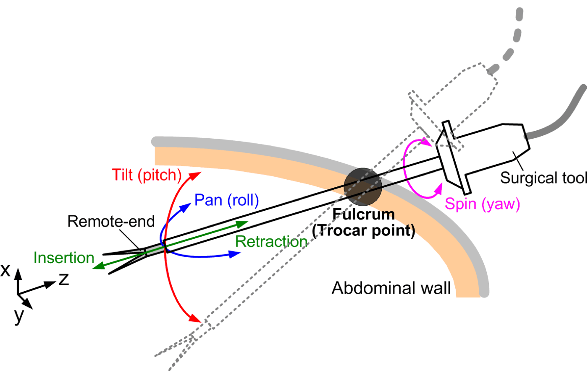
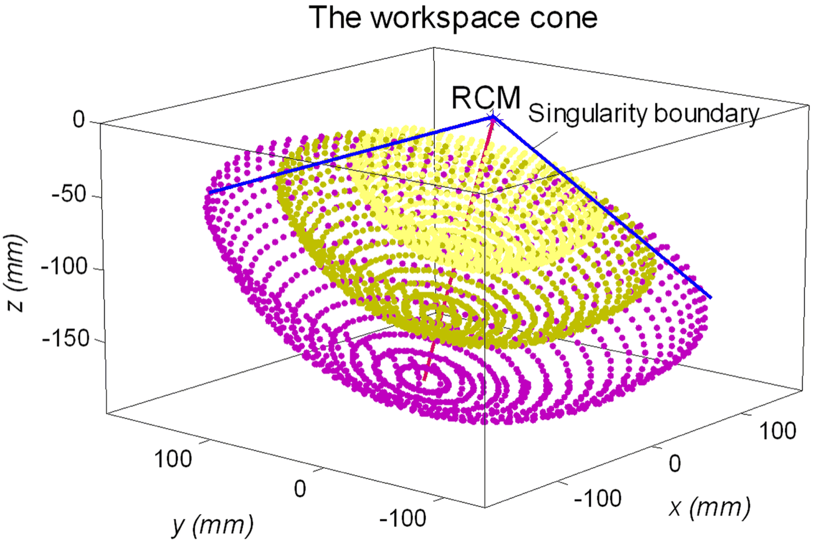

Research · Theme
Medical & rehabilitation devices
Surgical instruments pass through a small incision, so the mechanism that holds them must pivot about a point it cannot reach. Rehabilitation devices must support a limb's weight without fighting the patient. Both are mechanism-design problems, and both draw on the other themes.
The surgical work covers remote-centre-of-motion mechanisms for minimally invasive surgery and craniotomy and a statically balanced laparoscope holder; the rehabilitation work includes a gravity balancer for lower-limb therapy that switches between hip-only and knee-only exercise. Three of the designs became granted US patents, one of them transferred to industry.






Representative papers
- A novel reconfigurable gravity balancer for lower-limb rehabilitation with switchable hip/knee-only exercise. animation coming
Tseng, T.-Y., Lin, Y.-J., Hsu, W.-C., Lin, L.-F. and Kuo, C.-H., ASME Journal of Mechanisms and Robotics, 2017. doi
US Patent 9,592,415 B2, Auxiliary Device for Muscle Strength Training. - Design of a novel statically balanced mechanism for laparoscope holders with decoupled positioning and orientating manipulation. animation coming
Kuo, C.-H. and Lai, S.-J., ASME Journal of Mechanisms and Robotics, 2016. doi
US Patent 9,232,981 B2, Surgical Holder. - Kinematics of a fully-decoupled remote center-of-motion parallel manipulator for minimally invasive surgery. animation coming
Kuo, C.-H. and Dai, J. S., ASME Journal of Medical Devices, 2012. doi
Also under this theme
- Kirigami analogies for parallelogram-based remote-center-of-motion mechanisms.
Yeow, B. S., Wang, A., Kuo, C.-H. and Ren, H., Biomimetic Intelligence and Robotics, 2025. doi - Innovative design of an automatic acupoint catgut-embedding instrument.
Kuo, C.-H. and Wang, C.-W., ASME Journal of Medical Devices, 2017. doi - Kinematic design and optimization of a novel dual-orthogonal remote center-of-motion mechanism for craniotomy.
Li, G.-K., Essomba, T., Wu, C.-T., Lee, S.-T. and Kuo, C.-H., Proc. IMechE Part C: Journal of Mechanical Engineering Science, 2017. doi - Kinematic design considerations for minimally invasive surgical robots: an overview.
Kuo, C.-H., Dai, J. S. and Dasgupta, P., International Journal of Medical Robotics and Computer Assisted Surgery, 2012. doi - Flexible robotics.
Vyas, L., Aquino, D., Kuo, C.-H., Dai, J. S. and Dasgupta, P., BJU International, 2011. doi - Patent Medical clamping instrument.
Kuo, C.-H., Liu, T.-H. and Wang, R.-J., US Patent 10,456,153 B2; technology transferred to HIWIN Technologies Corp., 2019. link
Figures on this page are the author's own drawings and photographs as published in the papers cited, reproduced here under the publishers' author reuse rights. Copyright remains with the respective publishers.